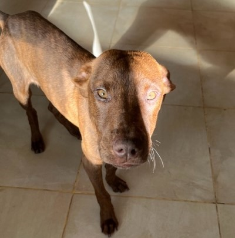

SOBRE NOSOTROS
Esta organización nace a raíz de una problemática que observamos todos los días en el país: la cantidad de perros que se encuentran en la calle. Perros que no tienen donde refugiarse, que no tienen alimento constante y nutritivo, no cuentan con cuidado de su salud ni un hogar que les brinde cariño.
En especial les queremos contar la historia de por qué este proyecto es tan importante para nosotros y cómo nació. Hace unos años, una amiga de la familia encontró a un perro abandonado en la calle, y desde el primer instante, sintió una conexión tan profunda con él que supo que no podía dejarlo allí, sólo y desamparado. En ese momento, ella no podía hacerse cargo de él, así que nos pidió si podíamos cuidarlo unas semanas hasta que encontrara un hogar permanente. El perro llegó a nosotros desnutrido, deshidratado y lleno de miedo. Sin embargo, con el tiempo, empezó a confiar y a mostrar su verdadera esencia: un ser juguetón y lleno de cariño. Cada día, su temor se fue desvaneciendo, y nosotros nos fuimos encariñando más y más con él. Le pusimos el nombre de Polo, y pronto supimos que no podíamos separarnos de él. Polo se convirtió en parte de nuestra familia de manera definitiva, y no hay palabras para describir la alegría que nos ha brindado. Esta experiencia nos inspiró a ayudar a otros animales a encontrar un hogar lleno de amor y cuidado. Queremos que más personas descubran la felicidad que se siente al adoptar a un animal que luego se convierte en una parte indispensable de la familia. Cada historia, cada adopción, es una oportunidad para ofrecer una segunda oportunidad y recibir, a cambio, un amor incondicional.
